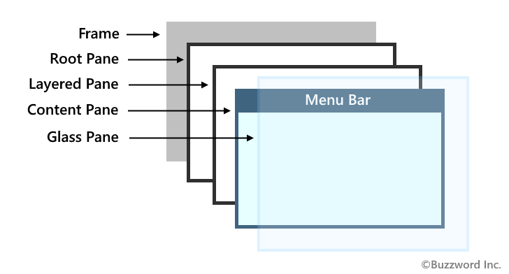
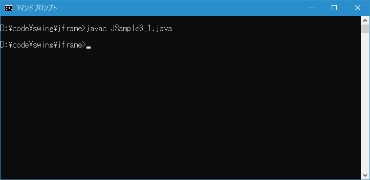
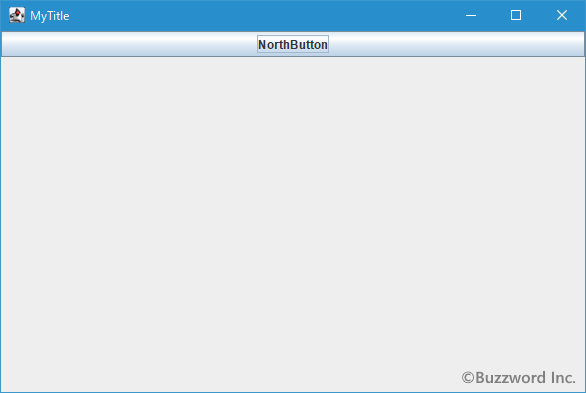

フレームに含まれるペインの取得とコンポーネントの追加
グラフィカルなアプリケーションで使用するラベルやボタンなどのコンポーネントはフレームに追加していきます。コンポーネントを追加するには、フレームからペインと呼ばれるものを取得し、ペインに対してコンポーネントを追加します。ここではフレームからペインを取得しコンポーネントを追加する手順について解説します。
目次
JFrameに含まれるペイン
JFrame クラスから作成したフレームは 1 枚の板のように見えますが、実際にはそれぞれ異なる目的のために使用されるペインと呼ばれる層が重なっている構造となっています。ペイン( PANE )とは窓枠や窓ガラスと意味の言葉です。

それぞれのペインには別々の使用目的がありますが、ボタンなどのコンポーネントはこの中の ContentPane に追加します。
ContentPaneを取得する
コンポーネントを追加するには対象となるフレームから ContentPane のオブジェクトを取り出し、取り出したペインに対してコンポーネントを追加します。 ContentPane を取得するには JFrame クラスで定義されている getContentPane メソッドを使います。
public Container getContentPane()
このフレームのcontentPaneオブジェクトを返します。
定義:
getContentPane、インタフェース: RootPaneContainer
戻り値:
contentPaneプロパティ
getContentPane メソッドを実行すると、フレームの ContentPane を表す Container クラス( java.awt.Container )のオブジェクトを取得します。
実際の使い方は次のようになります。
import javax.swing.JFrame;
import java.awt.Container;
class Sample extends JFrame{
public static void main(String args[]){
}
Sample(String title){
Container contentPane = getContentPane();
}
}
ContentPaneに対してコンポーネントを追加する
フレームから ContentPane のオブジェクトを取得したら、追加したいコンポーネントを ContentPane に追加します。コンポーネントを追加するには Container クラスで定義されている add メソッドを使います。
Swing では複数のコンポーネントを追加した時にどのようにレイアウトされるのかについて、レイアウトマネジャーとと呼ばれるものを使って管理します。フレームがデフォルトで使用するレイアウトマネージャーは BorderLayout です。 BorderLayout ではコンポーネントを追加する時に位置を合わせて指定する必要があるため、次の add メソッドを使用します。
public void add(Component comp, Object constraints)
指定されたコンポーネントをこのコンテナの末尾に追加します。 また、指定された制約オブジェクトを使用して、このコンテナのレイアウトにコンポーネントを追加することをレイアウト・マネージャに通知します。 これはaddImpl(java.awt.Component, java.lang.Object, int)の簡易メソッドです。
このメソッドではレイアウトに関連する情報が変更されるため、コンポーネント階層が無効になります。 コンテナがすでに表示されている場合は、追加されたコンポーネントを表示するために、あとで階層を検証する必要があります。
パラメータ:
comp - 追加されるコンポーネント
constraints - このコンポーネントのレイアウト制約を表現するオブジェクト
例外:
NullPointerException - compがnullの場合
1 番目の引数に追加するコンポーネントのオブジェクト、2 番目の引数に追加する位置を指定します。ここでは詳細は省略しますが、レイアウトマネージャーとして BorderLayout を使用している場合は次のいずれかを指定します。
BorderLayout.NORTH
BorderLayout.SOUTH
BorderLayout.EAST
BorderLayout.WEST
BorderLayout.CENTER
※ レイアウトマネージャーは複数の種類があり、異なるレイアウトマネージャーを使用している場合はコンポーネントの追加方法は異なります。詳しくは別のページで解説します。
実際の使い方は次のようになります。次の例ではボタンを追加しています。
import javax.swing.JFrame;
import javax.swing.JButton;
import java.awt.Container;
import java.awt.BorderLayout;
class Sample extends JFrame{
public static void main(String args[]){
}
Sample(String title){
JButton btn = new JButton("MyButton");
Container contentPane = getContentPane();
contentPane.add(btn, BorderLayout.CENTER);
}
}
なお、レイアウトマネージャーとして BorderLayout が設定されているコンテナに対して、引数が 1 つの次の add メソッドを使用した場合は、位置として BorderLayout.CENNTER が設定されたものして扱われます。
public Component add(Component comp)
指定されたコンポーネントをこのコンテナの最後に追加します。 これはaddImpl(java.awt.Component, java.lang.Object, int)の簡易メソッドです。
このメソッドではレイアウトに関連する情報が変更されるため、コンポーネント階層が無効になります。 コンテナがすでに表示されている場合は、追加されたコンポーネントを表示するために、あとで階層を検証する必要があります。
パラメータ:
comp - 追加されるコンポーネント
戻り値:
コンポーネント引数
例外:
NullPointerException - compがnullの場合
サンプルプログラム
それでは簡単なサンプルプログラムを作って試してみます。テキストエディタで次のように記述したあと、 JSample6_1.java という名前で保存します。
import javax.swing.JFrame;
class JSample1_1{
public static void main(String args[]){
JFrame frame = new JFrame();
frame.setTitle("MyTitle");
frame.setVisible(true);
}
}
次のようにコンパイルを行います。
javac JSample6_1.java

コンパイルが終わりましたら実行します。
java JSample6_1
次のようなフレームが表示されます。

今回はフレームを作成したあとボタンを 1 作成してフレームに追加しました。
ContentPaneの取得を省略してフレームに直接コンポーネントを追加する
現在はフレームから ContentPane のオブジェクトを取得してから ContentPane に対してコンポーネントを追加しなくても、単にフレームに対してコンポーネントを追加するだけで自動的に ContentPane に追加されるようになりました。
今までの記述方法:
JFrame frame = new JFrame();
JButton btn = new JButton("");
Container contentPane = frame.getContentPane();
contentPane.add(btn, BorderLayout.CENTER);
省略された記述方法:
JFrame frame = new JFrame();
JButton btn = new JButton("");
frame.add(btn, BorderLayout.CENTER);
あくまで自動的に ContentPane に追加してくれるようになっただけなので、 ContentPane に対して追加するという考え方は変わっていません。ただ古い環境でフレームに対して直接追加するとエラーとなるので当面は以前のままの記述方法を使って行きます。
-- --
フレームからペインを取得しコンポーネントを追加する手順について解説しました。
( Written by Tatsuo Ikura )

著者 / TATSUO IKURA
初心者～中級者の方を対象としたプログラミング方法や開発環境の構築の解説を行うサイトの運営を行っています。